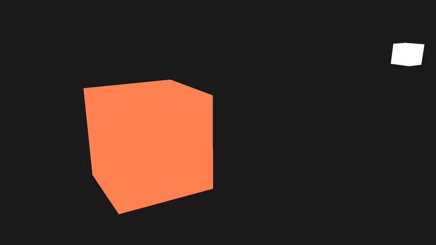

Lighting
Colors#
examples/Sources/08-BasicLighting, run with swift run BasicLighting. Download all examples or see how to run them.Lighting is the art of computing what color a surface should appear. Before any real lighting math, we need a model of color and a scene to light.
Color as numbers#
A color is three numbers: how much red, green and blue. In shaders each channel is a float where 0 is none and 1 is full intensity.
float3 coral = float3(1.0, 0.5, 0.31);
The color we see on an object is the part of the incoming light that the object reflects. A coral-colored object lit by white light reflects all of the red, half of the green and about a third of the blue, and absorbs the rest. In code, reflection is a component-wise multiplication:
float3 lightColor = float3(1.0, 1.0, 1.0);
float3 objectColor = float3(1.0, 0.5, 0.31);
float3 result = lightColor * objectColor; // (1.0, 0.5, 0.31)
With a green light the same object looks very different:
float3 lightColor = float3(0.0, 1.0, 0.0);
float3 result = lightColor * objectColor; // (0.0, 0.5, 0.0)
There is no red or blue light to reflect, so only a dark green remains. That single multiplication is the core of every lighting model in this series.
A scene to light#
We need two things: an object, and something that shows where the light is. Both are cubes, drawn with two different pipeline states.
The object's fragment function multiplies the two colors:
struct FragmentUniforms {
float3 objectColor;
float3 lightColor;
};
fragment float4 fragment_main(VertexOut in [[stage_in]],
constant FragmentUniforms &uniforms [[buffer(1)]]) {
return float4(uniforms.lightColor * uniforms.objectColor, 1.0);
}
struct FragmentUniforms {
var objectColor: Float3
var lightColor: Float3
}
var fragmentUniforms = FragmentUniforms(objectColor: [1.0, 0.5, 0.31],
lightColor: [1, 1, 1])
encoder.setFragmentBytes(&fragmentUniforms,
length: MemoryLayout<FragmentUniforms>.stride,
index: 1)
The lamp cube should not be affected by lighting at all, so it gets its own trivial fragment function:
fragment float4 fragment_light(VertexOut in [[stage_in]]) {
return float4(1.0);
}
Create a second pipeline state that uses the same vertex function and fragment_light:
pipelineDescriptor.fragmentFunction = library.makeFunction(name: "fragment_light")
lightPipelineState = try device.makeRenderPipelineState(descriptor: pipelineDescriptor)
A descriptor is only a recipe. You can change one property and create another state from it.
Drawing both#
let lightPosition = Float3(1.2, 1.0, 2.0)
// The object
encoder.setRenderPipelineState(pipelineState)
uniforms.model = .identity
encoder.setVertexBytes(&uniforms, length: MemoryLayout<Uniforms>.stride, index: 1)
encoder.setFragmentBytes(&fragmentUniforms, length: MemoryLayout<FragmentUniforms>.stride, index: 1)
encoder.drawPrimitives(type: .triangle, vertexStart: 0, vertexCount: 36)
// The lamp
encoder.setRenderPipelineState(lightPipelineState)
uniforms.model = float4x4(translation: lightPosition) * float4x4(scale: [0.2, 0.2, 0.2])
encoder.setVertexBytes(&uniforms, length: MemoryLayout<Uniforms>.stride, index: 1)
encoder.drawPrimitives(type: .triangle, vertexStart: 0, vertexCount: 36)
Set the view's clear color to something dark such as (0.1, 0.1, 0.1) so the lamp stands out. You now have a flat coral cube and a small white cube. The coral one has no shading yet, so its faces are indistinguishable. The next chapter fixes that.

Exercises#
- Change the light color and predict the object's color before running.
- Animate the light color with
sin(time)on each channel at different speeds.